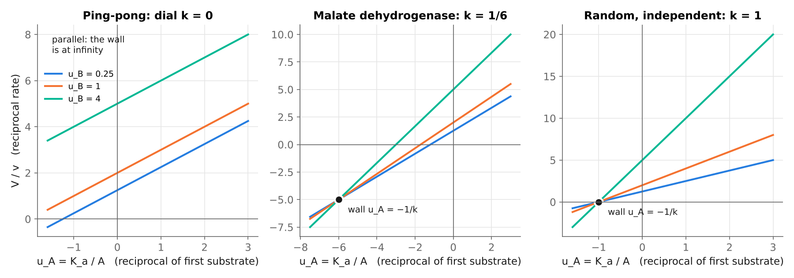
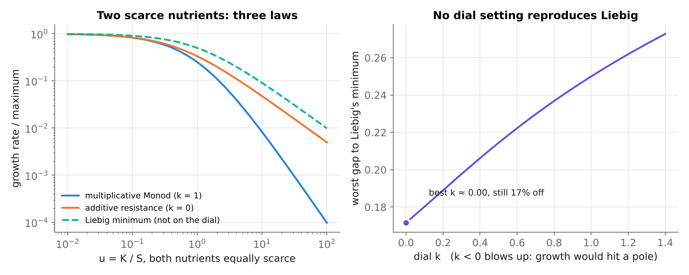

Biology series · 2 of 11
Write each substrate as u = K/S and the textbook rate law for an ordered two-substrate enzyme is exactly 1 + (u_A ✳_k u_B), with dial k = K_ia/K_a. Ping-pong enzymes are dial 0 and independent random binding is dial 1. The point where every double-reciprocal line crosses, which biochemists use to read off K_ia, is the wall of the dial. Two-nutrient growth laws sit on the same dial; Liebig's minimum does not.

Known or new. Everything here is known enzymology and microbiology. Cleland's rate laws for ordered and ping-pong mechanisms date from 1963, and the crossing point of double-reciprocal lines at 1/A = −1/K_ia is how K_ia is measured. The multiplicative and additive two-nutrient forms and Liebig's law of the minimum are standard growth models. What this page adds is the placement: the mechanism type is a dial setting, and the crossing point is the dial's wall.
Is there a lead worth following? No new lead. The reading is clean and exact: one dial number, k = K_ia/K_a, places every two-substrate mechanism between ping-pong (0) and independent random binding (1), and the wall theorem from the library is the crossing-point rule enzymologists already use. That makes it good teaching glue for the dial and a nice confirmation that the wall shows up in a real lab plot. It does not predict anything a biochemist does not already compute. The nutrient forms are the same algebra one level up, and Liebig's minimum, the law ecologists often prefer, is provably off the dial, which is worth knowing but not a lead.
An enzyme that joins two substrates A and B has the textbook (Cleland) rate law
Put uA = Ka/A and uB = Kb/B, how far each substrate is below its own half-saturation level. The last term is then k·uA·uB with k = Kia/Ka, so
I did not take the textbook formula on trust. I wrote down the elementary steps of each mechanism, solved the steady state exactly for 300 random sets of rate constants, and compared with the dial form: the ordered mechanism matches to 2×10⁻¹² and the ping-pong mechanism to 9×10⁻¹⁴. Ping-pong has no product term at all, dial 0. Random binding to two independent sites factors as (1 + uA)(1 + uB), dial 1, plain ✳. Lean proves the identity over any field.
A real enzyme: rat liver mitochondrial malate dehydrogenase has Ka = 72 µM, Kia = 12 µM, Kb = 86 µM, so k = 1/6. It is a sequential enzyme, but nearer the ping-pong end of the dial than the independent end.
Enzymologists plot 1/v against 1/A, one line for each level of B. Read the rate law as a line in uA: its height at zero is 1 + uB and its slope is 1 + k·uB. Changing B moves the whole line by (change in uB) × (1 + k·uA). That factor is zero at one place only:
So every line passes through the same point, at height 1 − 1/k. That is the dial's wall: in the library, circK(k, a, −1/k) = −1/k whatever a is, and here it means that at the wall the second substrate stops mattering. Lean proves both that the lines meet there and that no other point works. At dial 0 the wall runs off to infinity and the lines are parallel, which is exactly the textbook signature of a ping-pong enzyme.
The crossing point sits at negative 1/A, so it is never a real concentration. Like the helix–coil wall on the previous page, it is a point of the algebra that shows up only by extending lines past the data, and that is how biochemists use it.
A microbe short of two nutrients grows at some fraction of its maximum. Each nutrient alone gives θ = S/(K + S) = 1/(1 + u). The two common ways to combine them are the same dial:
Seen from the other side, the shortfall from full growth, 1 − θ₁θ₂, is the "or" of the two shortfalls, dial −1, the same law as two proofreading checks.
Liebig's law of the minimum, growth = the smaller θ, is not on the dial. With both nutrients equally scarce, the best single dial is k = 0 and it still misses Liebig by 17% at the worst point; negative dials send growth through a pole. Lean proves the dial forms; the miss is a numerical check.
Saturation itself is the circle inverse lifted: S/(K + S) = 1 + inv(K/S), and the free fraction is −inv(K/S). Kleiber's ¾ law is also a circle power (doubling body mass raises basal rate by 2¾ − 1 = 68%), but that is a relabelling with no content, so it gets no more than this line.

Single-substrate binding, inhibition and the binding polynomial belong to the chemistry series' biochemistry page, so they are left out here.
| Place | What the circle operation ∘₁ (called mult-add before 1.0) does there | Known since | Verdict |
|---|---|---|---|
| Ordered two-substrate enzyme | V/v = 1 + (uA ✳k uB), dial k = Kia/Ka; MDH sits at k = 1/6 | Cleland 1963 | Exact, known |
| Ping-pong / random independent | Dial 0 (parallel lines) and dial 1 (plain ✳) | Cleland 1963 | Exact, known |
| Crossing of double-reciprocal lines | The wall uA = −1/k, i.e. 1/A = −1/Kia; unique | Standard way to measure Kia | Exact, known; wall seen in a lab plot |
| Two-nutrient growth | Multiplicative is dial 1, additive resistance dial 0; shortfalls combine by 'or' | Standard growth models | Exact, known |
| Liebig's minimum | Not on the dial; best k = 0 misses by 17% | Liebig 1840 | Negative result |
| Saturation / Kleiber | θ = 1 + inv(K/S); Kleiber is a bare circle power | Michaelis–Menten 1913; Kleiber 1932 | Relabelling only |
File biology/02-metabolism/lean/Metabolism.lean, core Lean 4.37 with no mathlib, built on the shared library's base and using ✳ for the circle operation. Every theorem uses only Lean's standard axioms. It goes into the shared proof library as FusedAlgebra/Topics/Biology/Metabolism.lean.
bisub_is_circK, bisub_line, bisub_shift, free_fraction, limitation_or, limitation_or_three, limitation_pow, lines_meet_at_wall, meeting_point_unique, michaelis_menten, monod_additive, monod_mult, ordered_is_dial, pingpong, random_independent, random_independent', saturation, star_def, circK_comm'
Numeric checks: 19 of 19 pass, from checks.py beside this page.
The malate dehydrogenase constants come from a 1988 thesis I read earlier in this work; I did not re-open it for this page. The rate-law identities do not depend on them: they were checked by solving each mechanism's steady state directly.